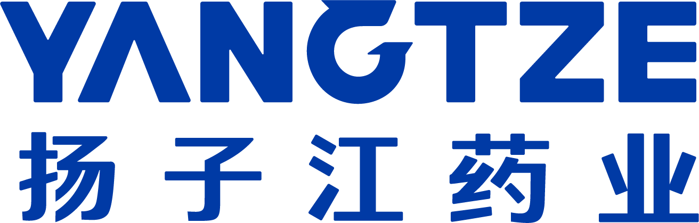
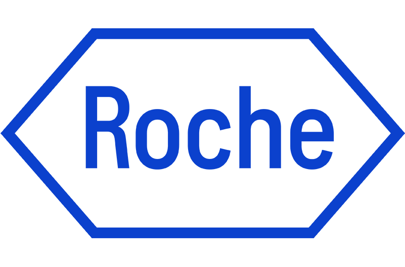

结论有出处，证据可核验
不只核对“有没有这篇论文”，更要核对“它是否支持这个结论”。关键判断关联证据与原始来源，研究分歧和适用边界明确呈现，不用一串引用代替核验。
结论与原文对照DOI / PMID 溯源研究分歧提示证据边界标注
为医学人专属定制，覆盖文献、选题、设计、分析与写作，陪你从一个问题，走向真正的科研成果。
科研不能止于“看起来正确”。数愈将医学专业能力、证据核验与方法复核融入科研全过程，让关键判断有据可查、执行过程由你掌控、研究成果持续沉淀。
不只核对“有没有这篇论文”，更要核对“它是否支持这个结论”。关键判断关联证据与原始来源，研究分歧和适用边界明确呈现，不用一串引用代替核验。
不只给你一张图、一个 P 值，更让你说清结果怎么来的。方法怎么选、数据怎么处理、参数怎么设、结论能说到哪，与分析结果一起交付可复核的依据。
不必逐步指挥 AI，也不把课题交给黑箱。任务推进中看见阶段成果，遇到重要方案由你确认；需要调整方向、补充材料或停止执行，主动权始终在你。
课题做了几个月，不该每次打开都从头交代。阶段成果、已确认方案与历史版本集中管理，看清做到哪、用哪版、下一步做什么，让研究接着推进，而不是反复重来。
携手恒瑞制药、扬子江药业、罗氏诊断及多家医院，让专业科研服务更多医学人。


国自然基金申报
【真实三甲医院名称】· 消化内科 / 肿瘤科课题组
梳理证据、凝练科学问题，设计路线并多轮评审申请书。
临床预测模型
【真实三甲医院名称】· 肝胆外科科研团队
清洗临床数据、构建预测模型，模型验证、解释与论文支持。
医疗数据集
【真实三甲医院名称】· 内分泌科课题组
专病数据标准化与质量核查，沉淀可复用的科研数据集。
从医学生到临床骨干，科室主任，从单个任务到完整课题，围绕不同科研阶段组合相应能力，把问题持续推进成可用成果。
从读懂文献，
到真正做自己的课题
从文献阅读、选题开题，到研究设计、数据分析和论文写作，数愈把零散科研任务串成一条完整路径，帮助你逐步建立独立科研能力，并把研究推进到可用成果。
把临床中的问题，
变成可以研究的科研项目
一个病例现象、一组临床数据、一个反复出现的问题，都可能成为科研起点。数愈帮助你先查证据、判断价值，再推进研究设计、数据分析和论文产出。
从看一个课题，
到推进一个科室的科研成果
不只是自己做科研，更要判断方向、审核方案、推进项目和沉淀成果。数愈帮助你从单个课题评审延伸到基金申报、项目进展和科室科研资产管理。